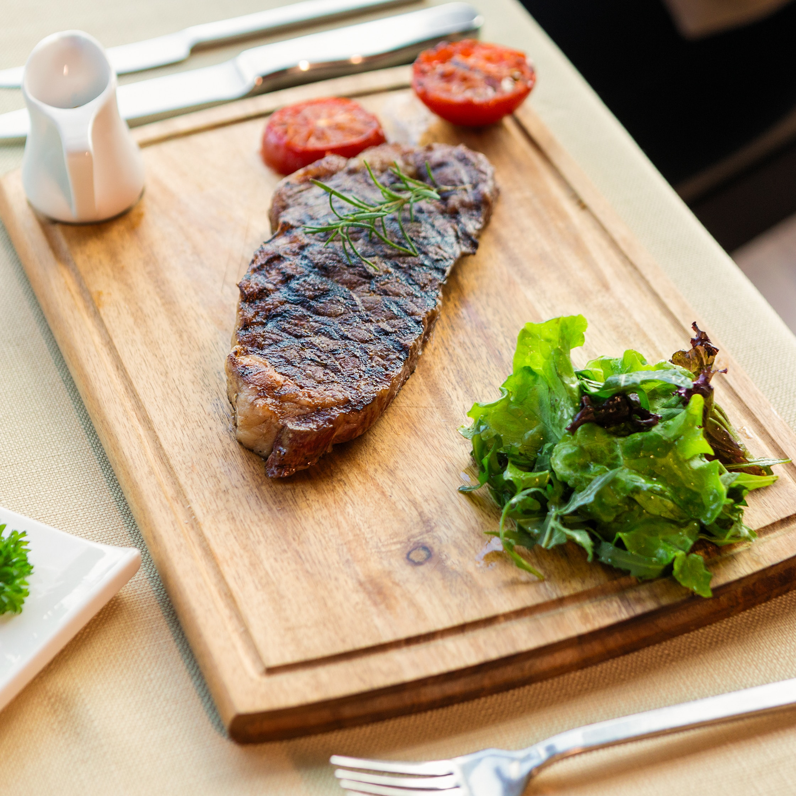

Ribeye


Description
Indulge in a succulent ribeye steak, perfectly seared to a mouthwatering
medium-rare, accompanied by a medley of roasted seasonal vegetables, and
finished with a rich red wine reduction for an exquisite culinary experience
that will leave your taste buds dancing with delight.
Ingredients
- Ribeye steak
- Seasonal vegetables (such as carrots, asparagus, and bell peppers)
- Red wine
- Olive oil
- Salt and pepper (for seasoning)
- Butter (optional, for searing the steak)
- Garlic (optional, for added flavor)
- Fresh herbs (such as thyme or rosemary, for garnish)
Steps
- Pre-heat oven to 400°F
- Season the ribeye steak generously with salt and pepper on both sides.
Let it sit at room temperature for about 30 minutes to allow it to
come to room temperature.
- Heat a cast-iron skillet or a heavy-bottomed oven-safe pan over high
heat. If desired, add a tablespoon of butter for extra flavor.
- Once the skillet is hot, carefully place the ribeye steak in the
pan. Sear it on each side for about 2-3 minutes to develop a
golden-brown crust. If using garlic, add a few cloves to the
pan and let them cook along with the steak for added flavor.
- Transfer the skillet with the steak to the preheated oven.
Cook for about 6-8 minutes for medium-rare doneness or adjust
the cooking time according to your preferred level of doneness.
- While the steak is cooking in the oven, prepare the roasted vegetables.
Toss the seasonal vegetables with olive oil, salt, and pepper.
Spread them on a baking sheet and place it in the preheated oven.
Roast for about 15-20 minutes, or until the vegetables are tender
and lightly browned.
- Remove the steak from the oven and transfer it to a cutting board.
Allow it to rest for a few minutes to retain its juices.
- Meanwhile, place the skillet back on the stove over medium heat.
Deglaze the pan with a splash of red wine, scraping the browned
bits from the bottom. Let the wine simmer for a few minutes
until it reduces and thickens slightly into a flavorful sauce.
- Slice the rested ribeye steak against the grain into thick slices.
Serve the steak alongside the roasted vegetables, drizzling the red
wine reduction over the steak. Garnish with fresh herbs, if desired.